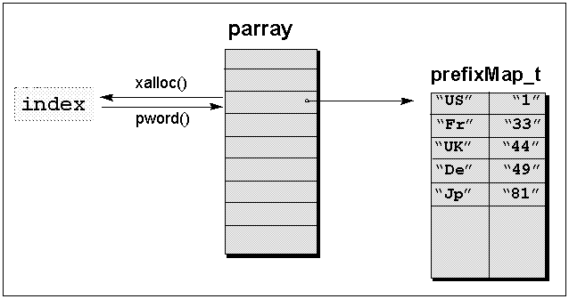

Let's turn here to improving our inserter function. Consider that the country code table might be huge, and access to a country code might turn out to be a time-consuming operation. We can optimize the inserter function's performance by caching the country code table, so that we can access it directly and thus reduce performance overhead.
The code below does some primitive caching. It takes the phone facet object from the stream's locale object and copies the country code table into a static variable.
std::ostream& operator<<(std::ostream& os, const PhoneNumber& pn)
{
std::locale loc = os.getloc();
const phone_put& ppFacet = std::use_facet<phone_put> (loc);
// primitive caching
static CodeMap cachedCodes = *(ppFacet.getCodes());
// some sophisticated output using the cached codes
...
return (os);
}
Now consider that the locale object imbued on a stream might change, but the cached static country code table does not. The cache is filled once, and all changes to the stream's locale object have no effect on this inserter function's cache. That's probably not what we want. What we do need is some kind of notification each time a new locale object is imbued, so that we can update the cache.
In the following example, notification is provided by a callback function. The iostreams allow registration of callback functions. Class std::ios_base declares:
enum event { erase_event, imbue_event, copyfmt_event }; //1
typedef void (*event_callback) (event, ios_base&, int index);
void register_callback(event_callback fn, int index); //2
| //1 | Registered callback functions are called for three events:
|
| //2 | The register_callback() function registers a callback function and an index to the stream's parray. During calls to imbue(), copyfmt(), or ~ios_base(), the function fn is called with argument index. Functions registered are called when an event occurs, in opposite order of registration.
The parray is an array member defined in class std::ios_base. One can obtain an index to this array via xalloc(), and access the array via pword(index) or iword(index), as shown in Figure 16:
Figure 16: The array parray |
In order to install a callback function that updates our cache, we implement a class that retrieves an index to parray and creates the cache, then registers the callback function in its constructor. The procedure is shown in the following code:
class CallbackRegistrar {
public:
CallbackRegistrar(std::ostream& os,
std::ios::event_callback fct,
CodeMap* cachedCodes)
{
int index = os.xalloc(); //1
os.pword(index) = cachedCodes; //2
os.register_callback(fct,index); //3
}
};
| //1 | An index to the array is obtained via xalloc(). |
| //2 | The pointer to the code table is stored in the array via pword(). |
| //3 | The callback function and the index are registered. |
The actual callback function will later have access to the cache via the index to parray. At this point, we still need a callback function that updates the cache each time the stream's locale is replaced. Such a callback function could look like this:
void cacheCodesCallback(std::ios_base::event callbackEvent,
std::ios_base& stream, int cacheIndex)
{
if (callbackEvent == std::ios::imbue_event) { //1
const phone_put& ppFacet =
std::use_facet<phone_put> (stream.getloc); //2
phone_put::CodeMap* cachedCodes =
(phone_put::CodeMap*) stream.pword(cacheIndex); //3
*cachedCodes = *ppFacet.getCodes();
}
}
| //1 | Check whether the event was a change of the imbued locale, |
| //2 | retrieve the phone number facet from the stream's locale, and |
| //3 | store the country code table in the cache. The cache is accessible via the stream's parray. |
We now have everything we need to improve our inserter. It registers a callback function that updates the cache whenever necessary. Registration is done only once, by declaring a static variable of class CallbackRegistrar.
std::ostream& operator<<(std::ostream& os, const phoneNumber& pn)
{
static phone_put::CodeMap codes =
*(std::use_facet<phone_put>(os.getloc()).getCodes()); //1
static CallbackRegistrar
registrar(os,cacheCountryCodes,&codes); //2
// some sophisticated output using the cached codes
...
}
| //1 | The current country code table is cached. |
| //2 | The callback function cacheCodesCallback() is registered. |